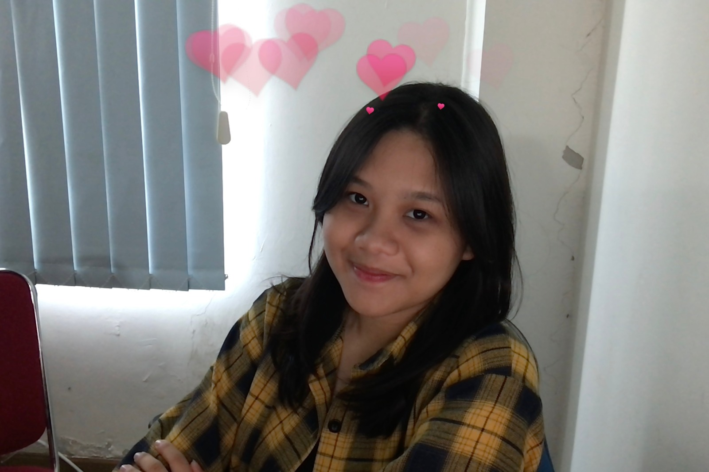
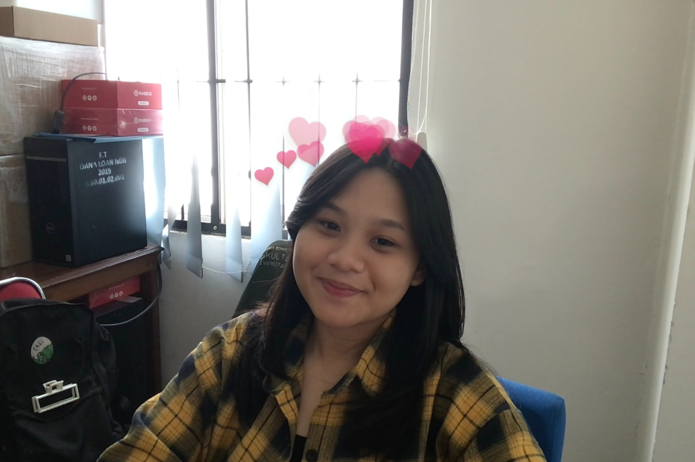
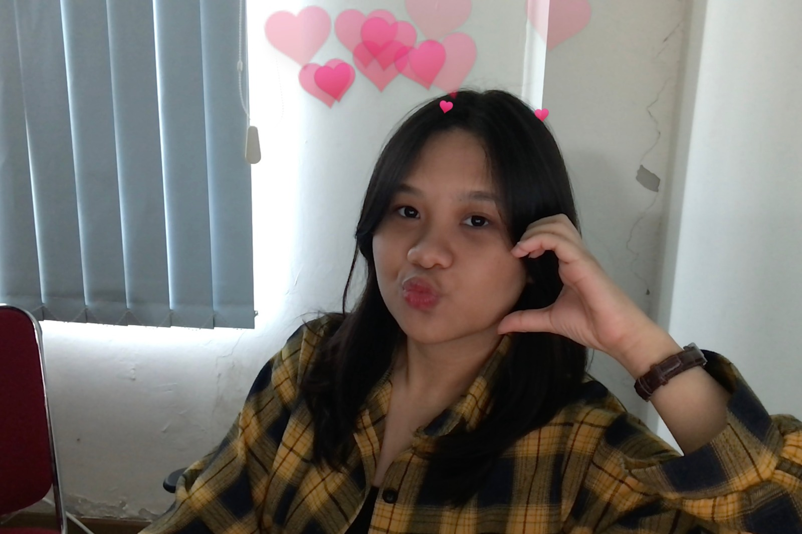

Welcome to Regina's Personal Homepage.
Hi everyone... my name is Regina. I am a second-year student in the computer engineering program. I really like spicy food. I also enjoy watching sad romance films. Some programming languages that I know are C++ and Python. I am now interested in learning the Tailwind framework to help improve my skills in frontend development.
Here are some of my photos hehe 💐🌷
  Artificial intelligence, or AI, is technology that enables computers and machines to simulate human intelligence and problem-solving capabilities.
In this article, I'll explore the 10 best web development frameworks in 2024.
Drama Korea Our Beloved Summer berhasil jadi trending topic beberapa hari belakangan, sebab episode-episode terakhirnya tayang pada 24 dan 25 Januari lalu. Dibintangi oleh Choi Woo Shik dan Kim Da Mi, drama 16 episode ini akhirnya tamat dengan cerita yang baik untuk semua pihak.
Email : reginagussalim08@gmail.com Phone : 087752276768
Instagram : reginagussalim Linkedin : Regina Agussalim Github : reginagussalim